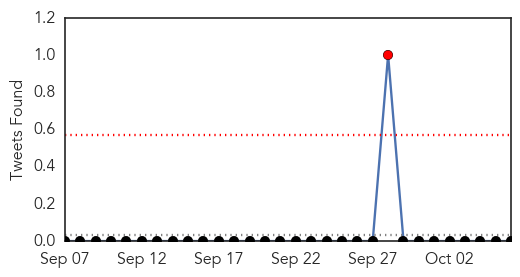
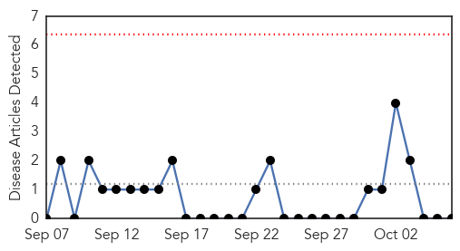
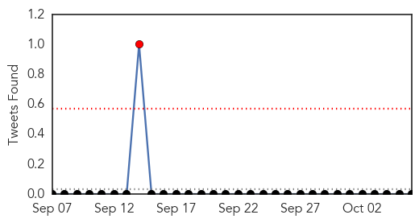

Meningitis
30-Day Web Trend
0 alerts, 0 warnings

30-Day Twitter Trend
1 alerts, 0 warnings

Article Locations
Article Confidences

Top Articles:
- 0.973
- Flash Update 1: Resurgence of malaria and notification of meningitis cases, 6 October 2015
- 0.972
- OCHA Mali - Flash Update 1: Resurgence of malaria and notification of meningitis cases, 6 October 2015 - Mali
- 0.941
- Tuscan meningitis outbreak spurs injections
- 0.776
- Be ready for Glässer’s disease whatever the health status on your farm
- 0.651
- Thai Health Min warns about leptospirosis in flood water
Top Tweets:
-
No tweets found for Oct 06, 2015
Chikungunya
30-Day Web Trend
0 alerts, 0 warnings

30-Day Twitter Trend
1 alerts, 0 warnings

Article Locations

Article Confidences

Top Articles:
-
No articles found for Oct 06, 2015
Top Tweets:
-
No tweets found for Oct 06, 2015